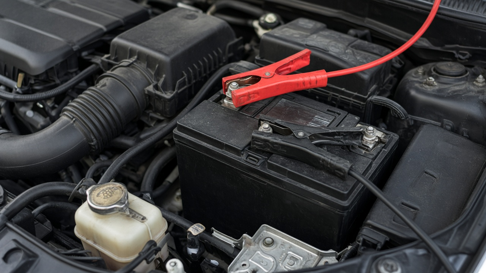

Trang chủ / Dịch vụ
Cứu hộ ô tô, xe hơi An Lộc – Bình Long – Bù Đốp 24/7
Kéo xe hơi, thay lốp, câu bình, giao xăng tại An Lộc, Bình Long, Bù Đốp và phường lân cận. Báo giá trước khi xuất phát.
Cứu hộ ô tô – cứu hộ xe hơi
Xe hơi chết máy, tai nạn nhỏ, nằm đường hay cần đưa về gara — Trung Hiếu kéo an toàn, cố định đúng cách, không cào gầm. Cứu hộ ô tô và cứu hộ xe hơi là cùng dịch vụ.
- Nhận xe hơi / ô tô, xe bán tải; xe máy vẫn nhận riêng
- Kéo về nhà, gara quen hoặc điểm bạn chỉ định
- Báo giá theo loại xe và số km trước khi đi
Chi tiết cứu hộ ô tô An Lộc · Cứu hộ xe hơi
Gọi cứu hộ ô tô
Thay lốp tận nơi
Nổ lốp giữa đường, không có lốp dự phòng hoặc không tự thay được — gọi Trung Hiếu đến thay tại chỗ.
- Thay lốp xe máy / ô tô tùy tình trạng
- Nếu không thay được tại chỗ sẽ kéo về gara
- Ưu tiên đoạn đường an toàn, có đèn cảnh báo
Chi tiết thay lốp An Lộc
Gọi thay lốp

Câu bình ắc quy
Xe đề không nổ, đèn mờ, bình yếu — câu bình đúng cực, không làm hỏng điện. Nếu bình hỏng sẽ tư vấn kéo về gara.
- Câu bình tại chỗ khi còn cứu được
- Không đề máy nhiều lần trước khi đội cứu hộ tới
- Báo tình trạng: đèn taplo, tiếng đề, loại xe
Chi tiết câu bình An Lộc
Gọi câu bình
Giao xăng tận nơi
Hết xăng giữa đường, đêm muộn hay khu vực ít cây xăng — giao đúng loại nhiên liệu, hỗ trợ nổ máy an toàn.
- Gọi/Zalo gửi vị trí + loại xe (xăng / dầu)
- Làm việc 24/7, kể cả lễ Tết
- Nếu xe không nổ sau khi đổ sẽ kiểm tra thêm
Chi tiết giao xăng An Lộc
Gọi giao xăng
Bạn đang gặp sự cố gì?
Chỉ cần một cuộc gọi, chúng tôi có mặt để hỗ trợ.
Quy trình
Chỉ 4 bước – Có mặt nhanh chóng
Đơn giản, rõ ràng, tiết kiệm thời gian cho bạn.
02. Gửi vị trí
Gửi vị trí + loại xe + tình trạng xe.
03. Báo giá
Trung Hiếu báo chi phí trước khi xuất phát.
04. Có mặt & xử lý
Cứu hộ tại chỗ hoặc kéo xe về gara.